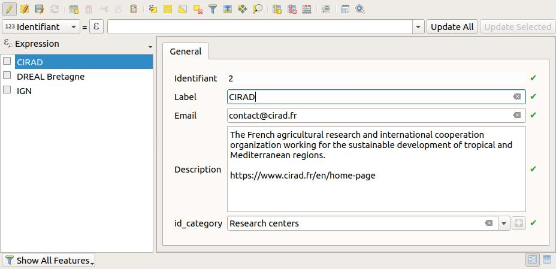

Introduction#
The administrator is in charge of describing the different data stored in the G-Obs database:
- actors,
- spatial layers,
- protocols,
- indicators,
- series of data.
See the documentation on these concepts.
To go on, you must first have installed and configured the G-Obs plugin for QGIS Desktop. See the doc G-Obs installation and configuration
Create your database local interface#
This algorithm will create a new QGIS project file for G-Obs administration purpose.
The generated QGIS project must then be opened by the administrator to create the needed metadata by using QGIS editing capabilities (actors, spatial layers information, indicators, etc.)
Parameters:
PostgreSQL connection to G-Obs database: name of the database connection you would like to use for the new QGIS project.QGIS project file to create: choose the output file destination. We advise you to choose a name reflecting the G-Obs database name.
Edit the database metadata#
The administration project#
The administration project created beforehand will allow the administrator to create, modify and delete metadata in the G-Obs database. As an administrator, you must open this project with QGIS.
Before going on, be sure you have a working connection between your computer and the database server.
Once opened, the QGIS project is configured to allow the administrator to edit the data. In the QGIS Layers panel, you will see the following layers:

These layers represent the G-Obs PostgreSQL tables which are in charge of storing the metadata and data. They are organized in two groups in the Layers panel:
Metadata: group containing the layers you need to edit to add metadata on actors, protocols, series, etc.Data: group containing the data stored in the database. Do no edit these layers
How to edit the metadata#
In QGIS, you can edit the layer data by toggling the editing mode for each layer:
- Select the layer in the panel by clicking on it: the layer is highlighted in blue
- Right-click on the layer name and select
Toggle Editingor use the menuLayer / Toggle Editing
Before going on, please toggle editing for all the following layers:
- actor_category
- actor
- spatial_layer
- indicator
- protocol
- series
- project
- project_view
Please refer to the documentation on G-Obs concepts to understand the meaning of each layer.
To add a new record, select the layer in the Layers panel,
then use the menu Edit / Add record (or CTRL+.). It will open a form wich lets you enter the needed data.
Once every required fields have been filled, validate with the OK button on the bottom-right.

To view all the records of a layer, select the layer in the Layers panel,
then open the attribute table with the menu Layers / Open attribute table (or F6)
You can undo previous modifications with the menu Edit / Undo (or CTRL+Z).
To permanently save the changed data in the layer, you need to use the menu Layer / Saver layer edits.
After saving the data, you will not be able to undo your changes
(but you can always reopen the data and changed the values).
To edit a record, open the layer attribute table, and then click on the small button Switch to form view
on the bottom-right of the dialog (the first one). Then select a record in the left panel,
and use the displayed form to edit the data.

To delete a record, select the record in the attribute table by clicking on the line number on the left:
the line must be highlighted in blue. Then use the trash icon Delete selected features (or Del).
You can undo the deletion if you have not yet saved layer edits.
Example data#
actor_category#
Example content:
| id | ac_label | ac_description |
|---|---|---|
| 1 | Public organizations | |
| 2 | Research centers |
Notes:
- Id will be automatically given after saving layer edits. Do not modify.
- Label and description are mandatory
actor#
Example content
| id | a_label | a_description | a_email | id_category |
|---|---|---|---|---|
| 1 | IGN | French national geographical institute. | contact@ign.fr | 1 |
| 3 | DREAL Bretagne | Direction régionale de l'environnement, de l'aménagement et du logement, région Bretagne. | email@dreal.fr | 1 |
| 2 | CIRAD | The French agricultural research and international cooperation organization working for the sustainable development of tropical and Mediterranean regions. | contact@cirad.fr | 2 |
Notes:
- Id will be automatically given after saving layer edits. Do not modify.
- All fields are mandatory
- The list of categories is taken from the
actor_categorytable. You should add new entry in this table beforehand if needed.
spatial_layer#
Example content
| id | sl_code | sl_label | sl_description | sl_creation_date | fk_id_actor | sl_geometry_type |
|---|---|---|---|---|---|---|
| 1 | pluviometers | Pluviometers | Sites equiped with pluviometers to measure rainfalls | 2019-06-26 | 2 | point |
| 2 | brittany-cities | Cities of Brittany , France | Cities of Brittany, France | 2019-07-05 | 2 | multipolygon |
Notes:
- Id will be automatically given after saving layer edits. Do not modify.
- All fields are mandatory
- Label will be used as the display name
- Code will be used as a unique text identifier for the spatial layer. Please do not use spaces, accentuated characters or punctuation symbol.
- Geometry type must be chosen with care and must reflect the data type of the source vector layer to import for these spatial layer. Usually, for polygon layers, it is safer to use MultiPolygon (to be able to represent islands or holes)
- Actors combobox comes from the data of the
actorlayer - Creation date is automatically set with the current date, but you can change it if needed.
indicator#
Example content
| id | id_code | id_label | id_description | id_date_format | id_value_code | id_value_name | id_value_type | id_value_unit | id_paths | id_category | created_at | updated_at |
|---|---|---|---|---|---|---|---|---|---|---|---|---|
| 1 | pluviometry | Hourly pluviometry | Hourly rainfall pluviometry in millimetre | hour | {pluviometry} | {Pluviometry} | {real} | {mm} | Environment / Water / Data, Physical and chemical conditions / Water | Water | 2020-12-02 15:06:29.11064 | 2020-12-02 15:06:29.11064 |
| 2 | population | Population | Number of inhabitants for city | year | {population} | {Population} | {integer} | {people} | Socio-eco / Demography / Population | Population | 2020-12-02 15:06:29.11064 | 2020-12-02 15:06:29.11064 |
| 3 | hiker_position | Hikers position | Position and altitude of hikers | second | {altitude} | {Altitude} | {integer} | {m} | Hiking / Tracks | Tracks | 2020-12-02 15:06:29.11064 | 2020-12-02 15:06:29.11064 |
Notes:
- Id will be automatically given after saving layer edits. Do not modify.
- Code is the unique text identifier of the indicator. Please do not use spaces, accentuated characters or punctuation symbol.
- Label is the display name
- Date format is the temporal resolution of the data which will be imported for this indicator. Please choose with care, depending on the source data and the information you would like to create from it.
- Category The optionnal category of the indicator. You can type some letters to search among the existing values. If you need to enter a new category, write it down.
-
The fields Codes, Names, Types and Units allow to define one or many dimensions for this indicator. You can add one item in each field with the plus
+button, or delete the selected one with the minus-button. The order of the data entered for each field must be respected. For example, if the indicator has two dimensions to store weather data: temperature & hygrometry, you could use:- Codes: Code of the dimension. Please do not use spaces, accentuated characters or punctuation symbol
Value temperature hygrometry - Names: Label of the dimension. You can use any necessary characters
Value Température Hygrométrie - Types: data type. You must choose among:
text,integer,real,date,timestamp,boolean
Value real integer - Units: Unit of the dimension. You can use any text.
Value °C % -
The Paths can be used to define an oriented graph which will help the future users to find the indicator among many.
- separated words or expressions with a coma
,will define a list of nodes. For example,Environment, Agriculturewill define two independant nodesEnvironmentandAgriculture - separated keywords with a slash
/will also define nodes, but also parent to child relations. For example,Environment / Water / Analyseswill create 3 nodesEnvironment,WaterandAnalyses.Environmentis the parent ofWater, which is the parent ofAnalyses - You can combine them, for example
Environment / Water / Analyses, Environment / Water / Resources, Agriculture / Resourceswill lead to the following graph:

- separated words or expressions with a coma
-
The creation & update timestamps are automatically calculated when data is saved.
protocol#
Example content
| id | pr_code | pr_label | pr_description |
|---|---|---|---|
| 1 | cirad-pluviometry | Pluviometry | Measure of rainfall in mm |
| 2 | cirad-population | Population | Number of inhabitants obtained from census. |
Notes:
- Id will be automatically given after saving layer edits. Do not modify.
- All fields are mandatory
- Label will be used as the display name.
- Code is a unique text identifier for the protocol. Please do not use spaces, accentuated characters or punctuation symbol
- Description allows to enter multiple lines to describe the protocol.
series#
Example content
| id | fk_id_protocol | fk_id_actor | fk_id_indicator | fk_id_spatial_layer |
|---|---|---|---|---|
| 1 | 1 | 2 | 1 | 1 |
| 2 | 2 | 2 | 2 | 2 |
Notes:
- Id will be automatically given after saving layer edits. Do not modify.
- All fields are mandatory
- A series is caracterized by a protocol, an actor, an indicator and a spatial layer. You must have created needed items beforehand in the corresponding layers (and save those layers edits) before creating the series.
project#
Example content
TODO
Notes:
- Id will be automatically given after saving layer edits. Do not modify.
- TODO
project_view#
Example content
TODO
Notes:
- Id will be automatically given after saving layer edits. Do not modify.
- TODO